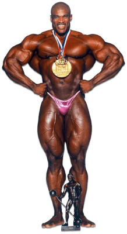

Nascimento e Adolescência
Nascido em Maringá, Paraná, Geba teve uma infância normal de qualquer retardado. Chegando na adolescência, se deparou com os games, começando pelo Play 3, jogando diversos jogos, entre eles GTA V.
Essa foi uma foto tirada por Murilo, um integrante da banda Guns n Roses, nela da para ver como e o naipe do garoto.
Na Academia
Em questão de físico, Gaybriel começou magro e depois virou uma bola, porém ele está trabalhando firmemente para mudar sua situação. Foco Geba!
Como podemos ver, esse é o Geba na cabeça dele, mas na realidade ele está mais parecido com isso.

Então é isso! Espero que você tenha gostado do nosso artigo com essa curiosidade sobre o dev Geba e seu simpático corpo musculoso.